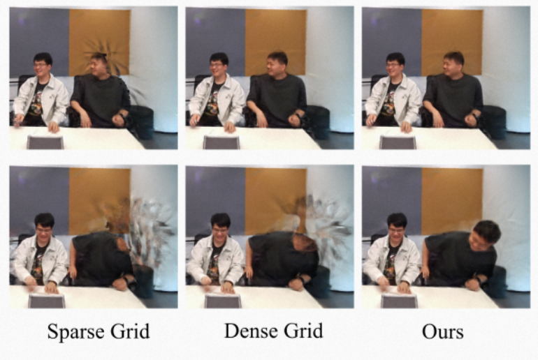
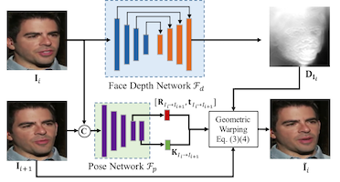
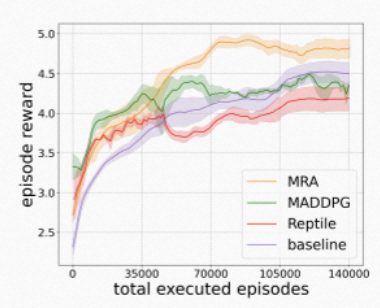
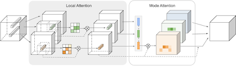
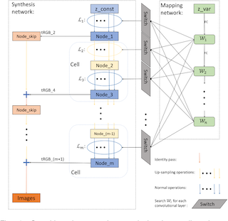
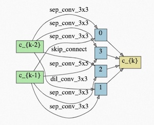

|
I am now a PhD candidate studying in Harbin Institute of Technology at Shenzhen, as well as an intern in Peng Cheng National Lab. My interests are in medical image processing, brain networks for diagnosis, and neuroscience studies. My research interests are in computer vision and deep learning. |
- [07.2023] One paper (First Author) is accepted by MedIA.
- [07.2023] One paper (First Author) is accepted by TMI.
- [04.2023] One paper (First Author) is accepted by Neural Networks.
- [03.2023] One paper (First Author) is accepted by MIDL-2023.
- [02.2023] One paper (First Author) is accepted by ICASSP-2023 (oral).
- [02.2023] Two papers (Other Author) are accepted by ISBI-2023.
- [02.2023] We are awarded the Open Science Excellent Author Program by Wiley.
- [09.2022] One paper (Co-First Author) is accepted by Human Brain Mapping.
- [08.2022] One paper (First Author) is accepted by BIBM-2022 (oral).
- [07.2022] One paper (Co-First Author) is accepted by Front. in Neuroscience.
- [06.2022] Our paper (on Neuroimage:clinical) is reported by Nature Reviews Neurology.
- [05.2022] One paper (First Author) is accepted by ICIP-2022.
- [04.2022] One paper (First Author) is accepted by MIDL-2022 (oral).
- [03.2022] We report the solution of MICCAI-QUBIQ-2021 challenge in MICCAI-2021-BrainLes.
- [11.2021] I win the Top in the Tecent AIMIS 2021 challenge on brain age prediction.
- [10.2021] Our team achieved the Top in MICCAI-QUBIQ-2021 challenge and MICCAI-VALDO 2021 challenge.
- [06.2021] One paper is accepted by Neuroimage:clinical .
- [12.2020] I become a project manager for the SuWen project of PengCheng Lab.
- [10.2020] I win the Runner-up in multi-center AD diganosis challenge.
- [09.2020] I win the Runner-up in MICCAI-QUBIQ-2020 challenge.

|
Yanwu Yang, Xutao Guo, Chenfei Ye, Yang Xiang*, and Ting Ma* Medical Image Analysis (MedIA), 2023. Paper / Code / |
|  |
Lingzhi Li, Zhen Shen, Zhongshu Wang, Li Shen and Ping Tan Advances in Neural Information Processing Systems (NeurIPS), 2022. Paper / ArXiv / Code / Bibtex |
|  |
Fa-Ting Hong, Longhao Zhang, Li Shen and Dan Xu Conference on Computer Vision and Pattern Recognition (CVPR), 2022. Paper / ArXiv / Code / Bibtex |
|  |
Shenao Zhang, Li Shen, Lei Han and Li Shen Gamification and Multiagent Solutions Workshop, ICLR, 2022. Paper / ArXiv / Bibtex |
|  |
Shenao Zhang, Li Shen, Zhifeng Li and Wei Liu Object Representations for Learning and Reasoning Workshop, NeurIPS, 2020. Paper / ArXiv / Code / Bibtex |
|  |
Yuesong Tian, Li Shen Li Shen, Guinan Su, Zhifeng Li and Wei Liu IEEE Transactions on Pattern Analysis and Machine Intelligence, 2021. Paper / ArXiv / Code / Bibtex |
|  |
Chaoyang He, Haishan Ye, Li Shen, and Tong Zhang Conference on Computer Vision and Pattern Recognition (CVPR), 2020. Paper / ArXiv / Code / Bibtex |
|
Jie Hu, Li Shen, Samuel Albanie, Gang Sun, and Enhua Wu IEEE Transactions on Pattern Analysis and Machine Intelligence, 2019. This paper is an extension of prior work SENets. Paper / ArXiv / Code & Model / Bibtex |
|
|
Jie Hu*, Li Shen*, Samuel Albanie*, Gang Sun, and Andrea Vedaldi Advances in Neural Information Processing Systems (NeurIPS), 2018. Paper / ArXiv / Code & Model / Bibtex |
|
|
Weidi Xie, Li Shen, and Andrew Zisserman European Conference on Computer Vision (ECCV), 2018. Paper / ArXiv / Bibtex | |
|
Jie Hu*, Li Shen*, and Gang Sun Conference on Computer Vision and Pattern Recognition (CVPR), 2018 (Oral). Winner at the ILSVRC 2017 Image Classification. Paper / Code & Model / Bibtex |
|
|
Qiong Cao, Li Shen, Weidi Xie, Omkar M. Parkhi, and Andrew Zisserman Conference on Automatic Face & Gesture Recognition (FG), 2018 (Oral). Paper / ArXiv / Code & Model / Project / Bibtex |
|
|
Li Shen, Zhouchen Lin, and Qingming Huang European conference on computer vision (ECCV), 2016. Winner at the ILSVRC 2015 Scene Classification. Paper / ArXiv / Model / Bibtex |
|
|
Wentao Zhu, Cuiling Lan, Junliang Xing, Wenjun Zeng, Yanghao Li, Li Shen, and Xiaohui Xie Thirtieth AAAI Conference on Artificial Intelligence (AAAI), 2016. Paper / ArXiv / Bibtex |
|
|
Li Shen, Gang Sun, Qingming Huang, Shuhui Wang, Zhouchen Lin, and Enhua Wu IEEE Transactions on Image Processing, 2015. Paper / Bibtex |
|
|
Li Shen, Gang Sun, Zhouchen Lin, Qingming Huang, and Enhua Wu International Joint Conference on Artificial Intelligence (IJCAI), 2015. Paper / Bibtex |
|
|
Li Shen, Shuhui Wang, Gang Sun, Shuqiang Jiang, and Qingming Huang Conference on Computer Vision and Pattern Recognition (CVPR), 2013. Paper / Bibtex |
- Winner at the ImageNet LSVRC 2017 Image Classification (CVPR17 Workshop).
- Winner at the ImageNet LSVRC 2015 Scene Classification (ICCV15 Workshop).
Last Update: March 28, 2023
Published with GitHub Pages